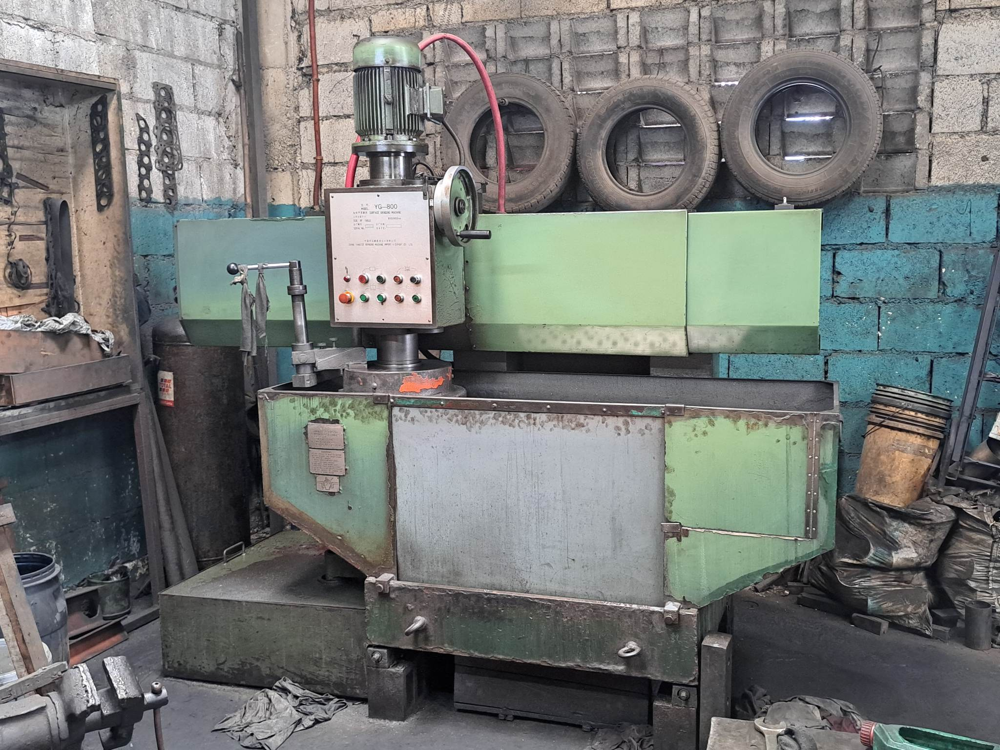
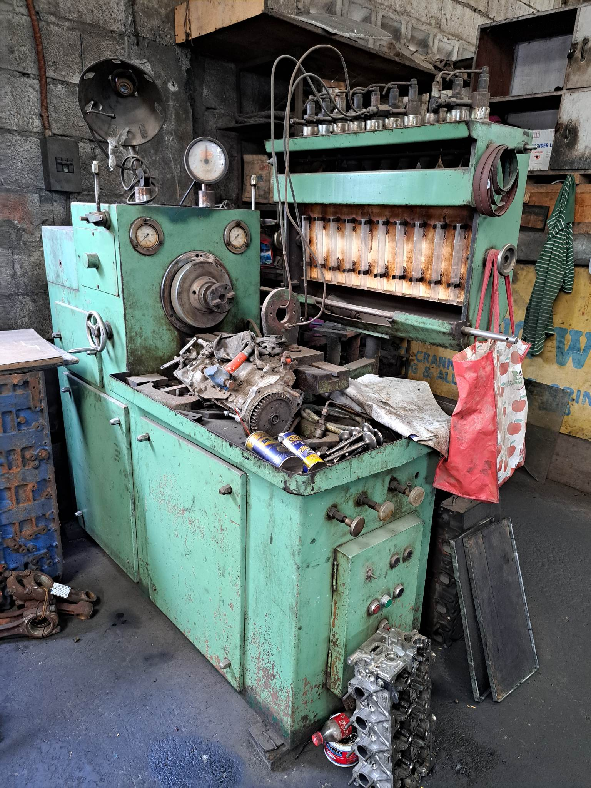

Machineries
Listed below are the machines that the business operates.

Surface Grinder Machine
A surface grinding machine is a machine tool that is used to accurately finish grind flat and cylindrical surfaces.

Reboring Machine
A reboring machine is a machine tool that is used to enlarge the diameter of a hole that has been previously bored.
Lathe Machine
A lathe machine is a machine tool that is used to shape a workpiece by rotating it against a cutting tool.

Calibrating Machine
A diesel injector calibrating machine is a specialized tool used to calibrate diesel fuel injectors. The purpose of calibrating a diesel injector is to ensure that it is delivering the correct amount of fuel to the engine at the right time.